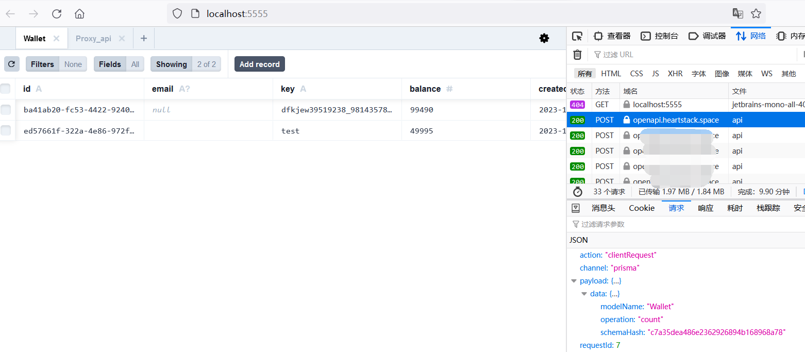

使用prisma studio链接任何server
当我在serverless中使用prisma成功后
理所当然的我想让 prisma studio 连接到我位于 serverless 中的服务
当我在互联网搜索 prisma studio remote sqlite 时，我没有找到合适的方案
所以我决定自己实现一个，得益于 prisma studio 所使用的api接口之简易，比我想象中花的时间更少（可能一个小时？）
下面分享我的具体做法:
1.
首先，在本地的开发项目中启动 prisma studio

2.
通过一个小巧的 js 代码片段，将浏览器客户端请求转发到远程服务器
js
// 请求拦截.js
(() => {
const rqwFetch = globalThis.fetch;
globalThis.fetch = async (...arg) => {
const [url, init] = arg;
const payload = JSON.parse(init.body);
if (
url.toString().endsWith("/api") &&
payload.channel === "prisma" &&
payload.action === "clientRequest"
) {
return rqwFetch("https://shenzilong.cn/studio_server/api", init);
} else {
return rqwFetch(...arg);
}
};
})();
3.
然后在后端实现对应的接口
ts
app.post(api_path, async (c) => {
const req = await c.req.json();
const [payload, resHelper] = reqParser(req);
const r = await execClientRequest(payload.data)
return c.json(resHelper(r, null));
});
interface queries {
schemaHash: string;
modelName: "Proxy_api";
operation: "count";
args?: {
take: 100;
skip: 0;
select: { id: true; Wallet_id: true; Wallet: true; createdAt: true; updatedAt: true };
};
}
interface payload {
data:
| {
schemaHash: string;
operation: "$transaction";
queries: queries[];
}
| queries;
}
async function execClientRequest(op: payload["data"]) {
if (op.operation == "$transaction") {
const { queries } = op;
const actions = queries.map(execQueries);
const r = await prisma.$transaction(actions);
return r;
} else if (["findMany", "count", "update"].includes(op.operation)) {
return execQueries(op);
}
function execQueries(op: queries) {
return prisma[toLowerCase(op.modelName) as /** 类型欺骗 */ "wallet"][op.operation](op.args);
}
}
function toLowerCase(str: string): string {
return str.toLowerCase();
}
function reqParser(req: any) {
const { requestId, action, payload } = req;
return [
payload as payload,
(data: any, error: any) => {
return {
requestId,
channel: "-prisma",
action,
payload: { error, data },
};
},
] as const;
}
稍微测了一下增删改查，一点毛病没有，如果我使用过程中遇到其他问题我会更新 gist 中的代码片段
